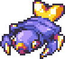
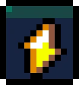
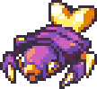
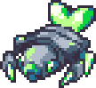

| ← #069 ??? | #070 Lumon | #071 Lampyre → |
|---|
| Normal Form | Corodex Description | Type |
|---|---|---|
|  | Lumon can use their tail light to easily navigate dark areas. They can often be found in caves. |  |
| Potent Form | Locations Data | Evolution Line |
|  | - Thunderous Cave | - Lumon - Lampyre (Level 16) - ??? (Level ???) |
| Perfect Form | Traits | |
|  | - Amplified (20/70) - Conductor (30/70) - Illuminate (20/70) |
| Stats | |
|---|---|
| HP | 52 |
| Attack | 22 |
| Defense | 25 |
| Sp. Attack | 25 |
| Sp. Defense | 32 |
| Speed | 30 |
| Skill set | |
|---|---|
| Level 1 | Scratch |
| Level 2 | Cute Pose |
| Level 4 | Swarm Diversion |
| Level 10 | Quad Volt |
| Level 14 | Electrify |
| Level 19 | Energy Drain |
| Level 23 | Taser |